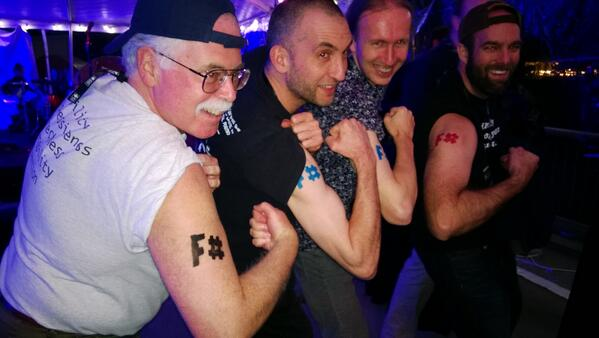

Ten Things F# Can Do... and C# Can't
.net - from YOLO to PRO-LO
withouttheloop.com

Last year


Does it even matter?
no
and yes
So how does a c# programmer level up?
get functional
with f#
1. functions
2. type inference
3. partial application
4. composition
5. pipe-forward operator |>
6. Tuples
and Pattern Matching
7. Immutable Data Structures
8. Quickcheck
(fscheck)
9. Algebraic Data Types
"World's most widely used formal method" - SPJ
10. Option
11. Actor Model Concurrency

- Erlang
- Scala (Akka)
- Go
- Rust
12. Type Providers
"strongly typed access to connected information sources"